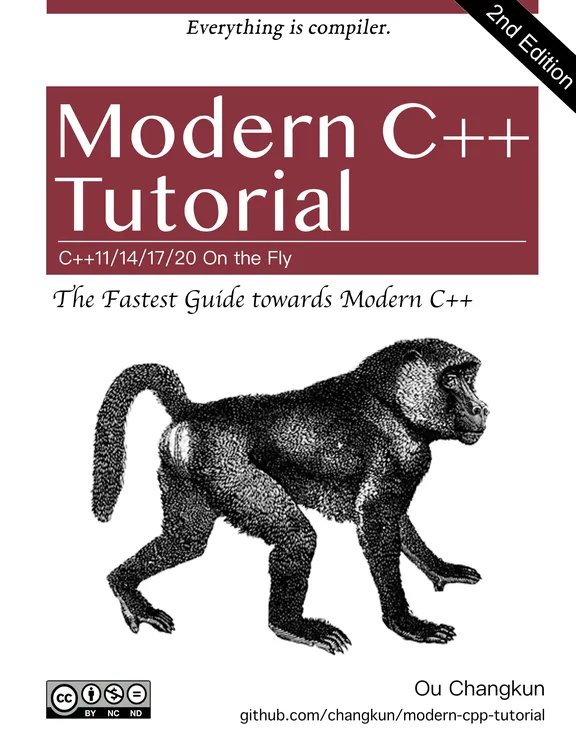

所谓现代 C++（即所谓的 Modern C++）指的是 C++11 及之后的版本，目前最新版本是 C++20，这期间一共有 C++11、C++14、C++17 三个版本。
变量
变量类型获取
typeid(变量名).name()
自动类型推导
int nNum1;
decltype(nNum1) nNum2 = 0
// decltype(nNum1) 通过 nNum1 推导出类型，相当于 int 类型。decltype(nNum1) == int
----------
auto nNum3 = nNum2 // 也可以进行类型推导
nullptr
nullptr 出现的目的是为了替代 NULL。在某种意义上来说，传统 C++ 会把 NULL、0 视为同一种东西，这取决于编译器如何定义 NULL，有些编译器会将 NULL 定义为 ((void*)0)，有些则会直接将其定义为 0。
C++ 不允许直接将 void * 隐式转换到其他类型。但如果编译器尝试把 NULL 定义为 ((void*)0)，那么在下面这句代码中：
char *ch = NULL;
没有了 void * 隐式转换的 C++ 只好将 NULL 定义为 0。而这依然会产生新的问题，将 NULL 定义成 0 将导致 C++ 中重载特性发生混乱。
void foo(char*);
void foo(int);
那么 foo(NULL); 这个语句将会去调用 foo(int)，从而导致代码违反直觉。
nullptr 的类型为 nullptr_t，能够隐式的转换为任何指针或成员指针的类型，也能和他们进行相等或者不等的比较。
函数返回类型后置
auto test()->int { // 即 int test() {}, auto 仅仅是占位用
return 1213;
}
结合函数指针使用
typedef 函数返回类型 (*指针变量)(参数类型，参数类型...)
#include <iostream>
#include <string>
using namespace std;
auto test1()->int {
return 23333;
}
// typedef int (*fun_ptr)(int,int); // 声明一个指向同样参数、返回值的函数指针类型
typedef int (*pfunc)();
auto test2()->int(*)() { // int(*)() 函数指针
return test1; // 返回一个函数指针，指向 test1 的
}
int main() {
cout << test2()() << endl; // 匿名调用
pfunc pf = test2();
pf();
cout << pf() << endl; // 显示调用
system("pause");
return 0;
}
前人栽树
- 欢迎回到 C++ - 现代 C++ | Microsoft Learn
- https://github.com/changkun/modern-cpp-tutorial
- https://changkun.de/modern-cpp/